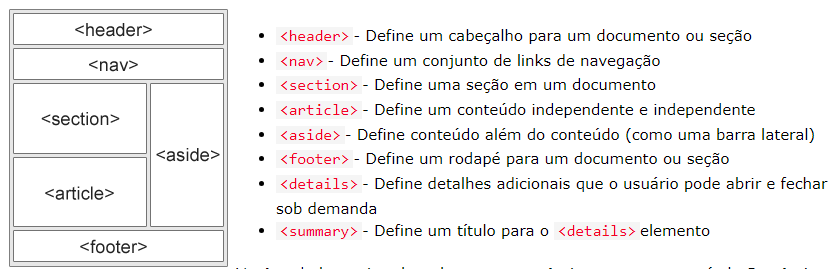

Introdução ao HTML
O HTML significa Linguagem de Marcação de Hipertexto, sendo o padrão para a criação de páginas da web. O HTML descreve a estrutura das páginas, que consistem em elementos (TAGS: Títulos, parágrafos, imagens, etc.) que informam ao navegador como deve exibir o conteúdo.
Os elementos são definidos por uma tag inicial (<a>), conteúdo (texto) e por uma tag final (</a>). Por exemplo, a tag "<a>link</a>" é utilizada para criar um hyperlink para outra página na web ou para um local específico na mesma página. Alguns elementos não possuem conteúdo, como a tag <br>; esses elementos são chamados de elementos vazios. Como dito anteriormente, os elementos são os conteúdos que descrevem a estrutura da página e são interpretados (lidos) pelo navegador da web (Chrome, Edge, Firefox, Safari). O navegador não exibe a tag em si, mas sim o que a tag representa.
Os elementos podem ser aninhados (elementos que contêm outros elementos). Todos os documentos HTML consistem em elementos HTML aninhados. Não é recomendado pular a tag final, pois pode causar problemas. O HTML não diferencia maiúsculas de minúsculas, mas é recomendado usar letras minúsculas.

Documentos HTML
O HTML possui uma estrutura básica ( <html></html>, <head></head> <title></title>, <body></body>, <h1></h1>, <p></p>), mas é recomendado que os documentos HTML comecem com a declaração <!DOCTYPE html>. Essa tag representa o tipo de documento e ajuda o navegador a exibir as páginas web corretamente. Deve ser a primeira tag a ser inserida no documento HTML, e sua declaração não diferencia maiúsculas de minúsculas. Essa tag também possui outra forma de declaração como para o HTML5 (<!DOCTYPE html>). Lembrando que o conteúdo da página que vai ser exibido pelo navegador fica dentro do body.

Tags e seus atributos
As tags, como dito anteriormente, são os elementos da página que serão exibidos, e o atributo fornece informações adicionais a esses elementos. Visto que todos os elementos podem possuir um atributo que deve ser declarado na tag inicial e geralmente vem em pares nome/valor, como: nome="valor", como exibido na imagem anterior, os elementos (tags) recebem o atributo de id (identificador), e a tag de a (href: atributo especifica o URL da página) recebeu um atributo específico para a própria tag, é recomendado que todos os atributos sejam em letra minúsculas e os valores devem estar em torno de aspas("valor") duplas ou simples('valor').
Outro exemplo de atributo específico é o src que especifica o caminho para a imagem a ser exibida e existe duas maneiras de especificar o URL. Um elemento pode ter mais de um atríbuto desde que eles não entrem conflito, a tag img recebe os atributos(src, widht, height, etc...), assim como o atributo alt da tag img mais conhecido como atributo alternativo e ele é obrigatório para a tag <img> tag especifica um texto alternativo para uma imagem
-
URL absolutaLinks para uma imagem externa hospedada em outro site, que possuem direitos
autorais, significa que precisa de permissão para usar e não terá como ás controlar.
-
URL relativoLinks para uma imagem hospedada no site. Aqui, o URL não inclui o nome de
domínio. Se o URL começar sem barra, será relativo à página atual
e se o URL começar com uma barra, será relativo ao domínio.
Títulos
Os títulos são importantes na estrutura do html, pois é através de dele que o mecasnismo de busca utiliza para indexar a estrutura e o conteúdodas páginas web, por esse motivo os títulos não devem ser utilizados apenas para deixar o texto maior ou em negrito. existem diferentes tamanhos padrão para cada título, mas que podem ser modificados com o font-size no CSS.
O elemento <title> define o título da página exibido na barra de título do navegador, proporcionando uma descrição concisa da página para os usuários. Por outro lado, o elemento <h1> é utilizado para definir o título de nível mais alto dentro do conteúdo da página, destacando o título principal de uma seção específica. Enquanto <title> é parte do contexto do navegador, <h1> é parte do conteúdo visível na página.
Regras Horizontais HTML
A regra horizontal é declarada pela tag <hr> que define uma quebra temática em uma página, ele é usado para separar o contúdo(ou alteração) em uma página.
Existe também a tag <br> que define uma quebra de linha e também é conhecido por ser uma tag vazia, outros exemplos de quebra de linha é o elemento <pre> que é exibido em uma fonte de largura fixa(Courier) e preserva espaços e quebras de linhas, esse tipo de elementos é utilizado em poemas.
Estilizando o HTML
Como sabemos o HTML é a estrutura da nossa página e para estiliza-lo utilizamos o CSS (Cascading Style Sheets) é uma linguagem de estilo usada para definir a aparência e o layout dos elementos HTML em uma página da web. Quando você estiliza o HTML com CSS, está especificando como os elementos HTML devem ser apresentados visualmente.
O html pode ser estiulizado utilizando a tag style dentro do documento html ou através de um arquivo externo sendo referênciado no html através de três manieras: inline - usando o style atributo dentro dos elementos HTML, interno - usando um <style> elemento na <head> seção e externo - usando um <link> elemento para vincular a um arquivo CSS externo. A maneira mais conrreta é utilizar o style em arquivo externo
O HTML suporta 140 nomes de cores que possam ser usados na estilização do documento HTML, as cores podem serem usadas no fundo da página como também para definir a cor do texto e borda, as cores podem ser representadas por valores( RGB, valores HEX, valores HSL, valores RGBA e valores HSLA)
Com o atributo de estilização podemos alterar a aparência da página, como mudar a cor de fundo, mudar a fonte da letra como a sua cor também, além disso podemos modificar a margin, o tamnaho e os espaçamentos entre cada elemento, o html em si possui algumas tags de formatação que mxem com a paraência do contéudo em si. Podemos exibir um texto em ítalico, negrito, utilizando apenas a tag html para isso, outros exemplos disso:
Citação em HTML e comentários
O HTML oferece elementos para formatar citações de texto de forma adequada. A citação direta é representada pelo elemento <blockquote>, que indica uma seção de texto diretamente citada de outra fonte. Por padrão, os navegadores adicionam uma margem extra ao redor do texto citado. O elemento <q> é usado para marcar uma citação curta dentro de um parágrafo, com aspas geralmente adicionadas automaticamente pelos navegadores. Além disso, o HTML também possui o elemento <strong> para citar fragmentos de código, geralmente exibidos em uma fonte monoespaçada para diferenciá-los do texto normal. Estes elementos ajudam na formatação e identificação de citações e fragmentos de código em documentos HTML, melhorando a clareza e legibilidade do conteúdo para os leitores.
Comentários em HTML são usados para incluir anotações no código que não são exibidas no navegador. Eles são escritos entre <!-- e --> e são úteis para documentar o código, desativar temporariamente partes do código, ou fornecer explicações sobre seu funcionamento. Comentários devem ser usados com parcimônia e serem claros e concisos.
Outros conceitos importantes do HTML
-
Tabelas em HTML:
As tabelas em HTML são estruturas fundamentais para organizar dados de forma tabular, geralmente utilizadas em bancos de dados, relatórios ou exibições de informações organizadas em linhas e colunas. São definidas pelo elemento <table>, onde cada linha é representada por <tr>, e dentro delas, as células podem ser de cabeçalho <th> ou de dados <td>.
-
Ícones de Lista (List Icons):
Os ícones de lista referem-se a símbolos gráficos ou imagens utilizados para representar itens de uma lista, oferecendo uma experiência visual mais rica e informativa. Podem ser integrados em listas HTML por meio do elemento <li> e estilizados com CSS para adicionar ou substituir marcadores padrão.
-
Listas em HTML:
As listas em HTML são essenciais para agrupar e exibir uma coleção de itens relacionados de maneira organizada e sequencial. Existem três tipos principais de listas: não ordenadas <ul>, ordenadas <ol> e de definição <dl>, cada uma com sua própria sintaxe e finalidade específica.
-
Elementos de Bloco HTML:
Os elementos de bloco HTML são fundamentais para estruturar e organizar o conteúdo de uma página da web. Eles ocupam toda a largura disponível e iniciam em uma nova linha. Exemplos incluem <div>, <p>, <h1>-<h6>, <ul>, <ol>, <table>, entre outros.
-
Elementos Embutidos HTML:
Os elementos embutidos HTML são utilizados para inserir conteúdo dentro de outros elementos, ocupando apenas o espaço necessário para exibir o conteúdo e permitindo que outros elementos sejam exibidos na mesma linha. Exemplos incluem <span>, <img>, <a>, <strong>, <em>, <br>, entre outros.
-
Divisão (<div>) em HTML:
O elemento <div> em HTML é frequentemente utilizado como um contêiner genérico para agrupar outros elementos e aplicar estilos CSS ou comportamentos JavaScript a eles. Embora não tenha significado semântico específico, é amplamente utilizado para fins de estilização e organização do layout da página.
Iframes
Um iframe HTML é usado para exibir uma página da web dentro de outra página da web, representado pela tag iframe e deve incluir um atributo title para o elemento <iframe>. Isso é usado por leitores de tela para ler qual é o conteúdo do iframe. Podemos definir a largura (width) e a altura (height) especificados em pixels. Por padrão, um iframe possui uma borda ao seu redor e também pode alterar o tamanho, estilo e cor da borda do iframe.
Um iframe pode ser usado como quadro de destino para um link, o target atributo do link deve referir-se ao nameatributo do iframe para isso usamos o src atributo define o URL da página a ser incorporada.
A política de mesma origem impede que um documento ou script em uma origem acesse recursos em outra origem, a menos que as origens sejam as mesmas. Isso significa que, ao incorporar um <iframe> em uma página da web, você só pode carregar páginas ou recursos em um <iframe> se o servidor que os fornece permitir essa incorporação, usando o cabeçalho HTTP X-Frame-Options ou Content-Security-Policy. Essa medida de segurança evita ataques como roubo de sessão e exibição de conteúdo malicioso em sites confiáveis.
JavaScript
A tag HTML <script> é usada para incluir scripts do lado do cliente, geralmente escritos em JavaScript, em uma página HTML. Esses scripts são responsáveis por adicionar interatividade e funcionalidades à página, como manipulação de elementos HTML, validação de formulários e alterações dinâmicas de conteúdo.
Você pode incluir o código JavaScript diretamente entre as tags <script>, ou referenciar um arquivo externo usando o atributo src. Para interagir com elementos HTML, o JavaScript usa métodos como document.getElementById() para selecionar elementos específicos e manipular seu conteúdo ou estilo.
Essa integração entre HTML e JavaScript permite criar páginas da web dinâmicas e interativas para os usuários.
JavaScript pode interagir com o HTML de várias maneiras, incluindo manipulação de elementos HTML, formulários, eventos, CSS, cookies e armazenamento local, comunicação com o servidor, validação de entrada do usuário e manipulação de tempo. Essa interação permite criar páginas da web dinâmicas e interativas.
Dentro da tag <noscript>, um conteúdo alternativo é definido para ser mostrado aos usuários que têm scripts desativados em seus navegadores ou estão usando navegadores que não suportam scripts.
Como funciona
O navegador compreende o HTML por meio de um processo chamado de "parsing" (análise). Quando você acessa uma página da web, o navegador solicita o arquivo HTML do servidor. Em seguida, ele analisa esse HTML linha por linha, identificando cada elemento HTML, suas tags de abertura e fechamento, e qualquer conteúdo dentro delas.
Com base nessa análise, o navegador constrói uma estrutura hierárquica chamada de "Document Object Model" (DOM). Essa representação em memória do HTML permite que o navegador manipule e acesse facilmente os elementos da página. Depois de construir o DOM, o navegador processa cada elemento, aplicando estilos CSS, executando scripts JavaScript e renderizando o conteúdo para exibição na tela. Ele também lida com eventos, como cliques do mouse ou pressionamentos de teclas, para fornecer uma experiência interativa ao usuário.
Finalmente, o navegador combina o conteúdo do DOM com os estilos CSS aplicados e renderiza a página, exibindo-a na tela do usuário. Este processo resulta na representação visual da página da web que vemos e interagimos no navegador.
Por trás do HTML
O HTML não é compilado como linguagens de programação tradicionais. Em vez disso, é interpretado diretamente pelos navegadores da web. Quando você acessa uma página, o navegador solicita o arquivo HTML ao servidor, que é então interpretado e renderizado pelo navegador para exibir a página da web. Não há um processo de compilação separado envolvido, como em linguagens compiladas.
Layout
Os elementos de estruturação, como <header>, <footer>, <nav>, <main>, <section>, <article>, <aside>, são usados para dividir o conteúdo em partes lógicas da página. Tabelas são usadas para exibir dados tabulares, mas devem ser evitadas para o layout da página devido à sua inflexibilidade.
Flexbox é uma técnica CSS para criar layouts flexíveis e responsivos, permitindo alinhamento e distribuição dinâmica de elementos em uma ou duas dimensões. Grid Layout oferece controle preciso sobre o posicionamento e dimensionamento dos elementos em layouts complexos em duas dimensões.
O posicionamento usando propriedades CSS como position: relative, position: absolute, e position: fixed permite posicionar elementos de forma precisa. As Media Queries permitem aplicar estilos diferentes com base nas características do dispositivo, garantindo layouts responsivos e adaptáveis. Essas técnicas são fundamentais para criar layouts modernos e responsivos em páginas da web, permitindo uma apresentação visualmente atraente e uma experiência de usuário otimizada em diferentes dispositivos e tamanhos de tela.
Existem quatro formas diferentes para criar layouts de múltiplas colunas:
-
Estrutura CSS
A estrutura CSS refere-se à organização e hierarquia dos estilos em um documento CSS. Ela inclui a definição de regras, seletores, propriedades e valores para aplicar estilos a elementos HTML.
-
Propriedade flutuante CSS
A propriedade flutuante CSS permite que os elementos sejam retirados do fluxo normal do documento e posicionados à esquerda ou à direita de seu contêiner, geralmente para criar layouts de coluna ou para alinhar elementos de forma específica.
-
Caixa flexível CSS
O modelo de caixa flexível CSS (Flexbox) é uma técnica de layout que permite criar layouts flexíveis e responsivos, facilitando o alinhamento, a distribuição e a reorganização de elementos em uma ou duas dimensões.
-
Grade CSS
O layout de grade CSS (CSS Grid) é uma técnica de layout que permite criar layouts complexos em duas dimensões, com controle preciso sobre o posicionamento e dimensionamento de elementos em linhas e colunas.
Resposividade
O web design responsivo em HTML é a prática de criar páginas da web que se ajustam automaticamente a diferentes dispositivos e tamanhos de tela. Isso é feito usando técnicas como media queries, layouts fluidos e imagens flexíveis para proporcionar uma experiência consistente e agradável em smartphones, tablets e desktops. Essa abordagem melhora a acessibilidade, alcance do público e a experiência do usuário, pois evita a necessidade de criar múltiplas versões do site para diferentes plataformas.
Para configurar a janela de visualização e criar um site responsivo é preciso adicionar no código HTML a tag <meta name="viewport" content="width=device-width, initial-scale=1.0">, essa tag vai fornecer instruções ao navegador sobre como colocar as dimensões da página.
As propriedades do layout em CSS são essenciais para controlar o posicionamento e a apresentação dos elementos em uma página da web. Elas incluem propriedades como display, position, float, flexbox e grid, que permitem criar layouts flexíveis e responsivos. Além disso, propriedades como margin, padding, width e height são usadas para controlar o espaçamento e as dimensões dos elementos.
As consultas de mídia, imagens responsivas e tamanho de texto responsivo são aspectos essenciais no design de páginas da web responsivas. As consultas de mídia permitem ajustar os estilos com base nas características do dispositivo, como largura de tela e orientação. As imagens responsivas se adaptam dinamicamente ao tamanho da tela, mantendo uma experiência visual consistente. Além disso, o tamanho do texto responsivo garante que o texto seja legível e confortável em diferentes dispositivos. Essas técnicas são fundamentais para criar páginas da web acessíveis e oferecer uma experiência de usuário agradável em diversos dispositivos.
Web Design Responsivo - Frameworks
Ambos os frameworks têm suas próprias vantagens e são amplamente adotados pela comunidade de desenvolvimento web. A escolha entre W3.CSS e Bootstrap geralmente depende das necessidades específicas do projeto, preferências pessoais e familiaridade com cada um deles.
W3.CSS:
Descrição: W3.CSS é uma estrutura CSS moderna desenvolvida pelo consórcio W3C. Ela oferece
uma série de estilos pré-definidos e componentes que podem ser facilmente aplicados a elementos HTML para
criar layouts responsivos e atraentes.
Características:
- Design responsivo por padrão para desktop, tablet e dispositivos móveis.
- Leve e rápido, projetado para desempenho eficiente.
- Não depende de bibliotecas JavaScript externas, como jQuery.
- Fácil de aprender e usar, com uma documentação abrangente.
Bootstrap:
Descrição: Bootstrap é um framework front-end desenvolvido pela equipe do Twitter. Ele
fornece uma ampla gama de componentes, estilos e plugins prontos para uso, permitindo que os desenvolvedores
criem rapidamente interfaces de usuário responsivas e consistentes.
Características:
- Grid system flexível que facilita a criação de layouts responsivos.
- Uma grande variedade de componentes UI pré-estilizados, como botões, formulários, barras de navegação.
- Suporte a JavaScript para interações dinâmicas, como modais, carrosséis e abas.
- Temas personalizáveis e extensíveis com o uso de variáveis Sass ou LESS.
Elementos de código de computador e sua função:
- <kbd> - Define a entrada do teclado
- <samp> - Define a saída de amostra de um programa de computador
- <code> - Define um pedaço de código de computador
- <var> - Define uma variável na programação ou em uma expressão matemática
- <pre> - Define texto pré-formatado
Meta tags/ Id e identificador único
Meta tags são elementos do cabeçalho HTML que fornecem informações adicionais sobre a página da web. Elas são interpretadas pelos navegadores e mecanismos de busca para entender o conteúdo e o propósito da página. As meta tags podem incluir detalhes sobre a codificação de caracteres, a escala da página em dispositivos móveis, descrição da página e palavras-chave relevantes para melhorar a classificação nos resultados de pesquisa. Além disso, meta tags como "author" podem indicar quem criou a página, enquanto outras como "viewport" podem controlar o comportamento da página em dispositivos móveis.
As meta tags desempenham várias funções cruciais para o desempenho e a visibilidade de uma página da web. Elas incluem SEO (Otimização para Mecanismos de Busca), fornecendo informações para os mecanismos de busca entenderem o conteúdo da página e influenciarem seu ranking nos resultados de pesquisa. Além disso, a meta tag de descrição oferece um resumo conciso do conteúdo da página nos resultados de pesquisa, o que pode impactar os cliques dos usuários. Anteriormente, as meta tags de palavras-chave eram importantes para indicar os termos relacionados ao conteúdo da página. Algumas meta tags também personalizam o conteúdo com base na localização geográfica dos usuários. Além disso, as meta tags podem controlar o rastreamento e indexação de páginas por mecanismos de busca, e melhorar a forma como o conteúdo é compartilhado e visualizado em redes sociais. Essas tags são fundamentais para melhorar a visibilidade, acessibilidade e relevância do conteúdo de uma página na web.
O id em HTML é um atributo usado para identificar exclusivamente um elemento em uma página da web. Cada elemento pode ter apenas um id, o que o torna único dentro da página. Por outro lado, o termo "identificador único" refere-se à propriedade de um id de ser verdadeiramente único em todo o documento HTML, evitando que outros elementos tenham o mesmo id. Garantir identificadores únicos é essencial para evitar problemas de acessibilidade e validação do documento.
Formulários e tabelas
As tags <td> e <tr> são usadas em tabelas HTML para definir células de dados e linhas de tabela, respectivamente. A tag <td> é usada para definir células de dados em uma tabela, enquanto a tag <tr> é usada para definir uma linha na tabela. Cada célula de dados pode conter informações tabulares e é organizada horizontalmente dentro de uma linha. Para criar formulários em HTML, use a tag <form> para envolver o conteúdo do formulário e adicione campos de entrada como caixas de texto, senhas e caixas de seleção usando a tag <input>. Certifique-se de fornecer rótulos descritivos para cada campo usando a tag <label>. Adicione botões de envio e redefinição usando <input type="submit"> e <input type="reset">, respectivamente. O atributo name é importante para identificar cada campo de entrada ao processar os dados do formulário no lado do servidor.
Importância de utilizar as tags corretamente
- Semântica:
- As tags corretas fornecem significado semântico ao conteúdo, tornando mais fácil para os desenvolvedores, motores de busca e leitores de tela entenderem a estrutura e o propósito do conteúdo.
- Acessibilidade:
- Tags adequadas ajudam a garantir uma melhor acessibilidade para usuários com deficiências visuais ou cognitivas, permitindo que leitores de tela interpretem corretamente o conteúdo e facilitando a navegação e compreensão.
- Compatibilidade:
- O uso de tags apropriadas aumenta a compatibilidade entre navegadores, dispositivos e tecnologias assistivas, garantindo uma experiência consistente para todos os usuários, independentemente do dispositivo ou software que estão usando.
- SEO (Otimização para Mecanismos de Busca):
- Motores de busca usam a estrutura semântica do HTML para indexar e classificar o conteúdo das páginas da web. Usar as tags corretas pode ajudar os motores de busca a entenderem melhor o conteúdo e melhorar o ranking nos resultados de pesquisa.
- Manutenção e Leitura de Código:
- Utilizar as tags corretas torna o código mais legível e fácil de manter, tanto para o desenvolvedor que está trabalhando no projeto quanto para outros colaboradores que possam revisar ou modificar o código no futuro.